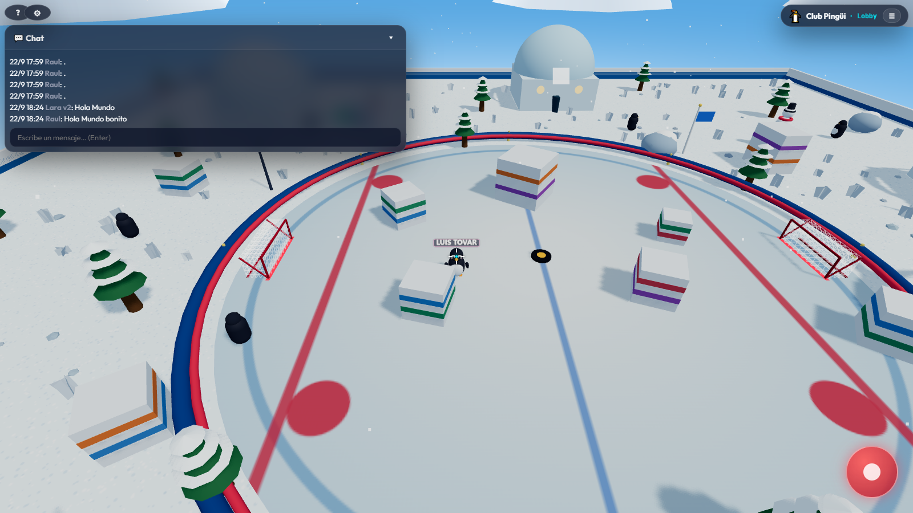
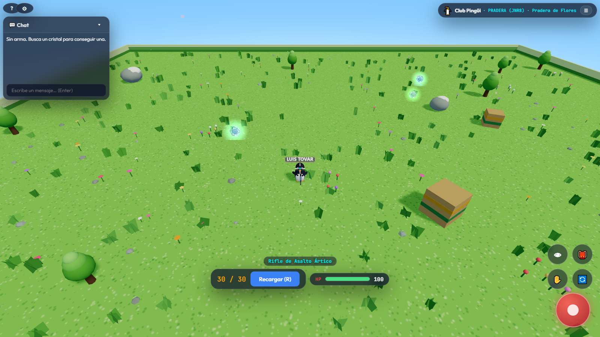
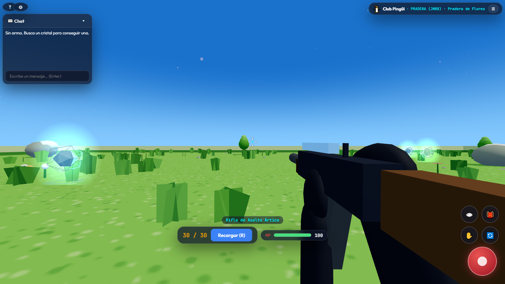
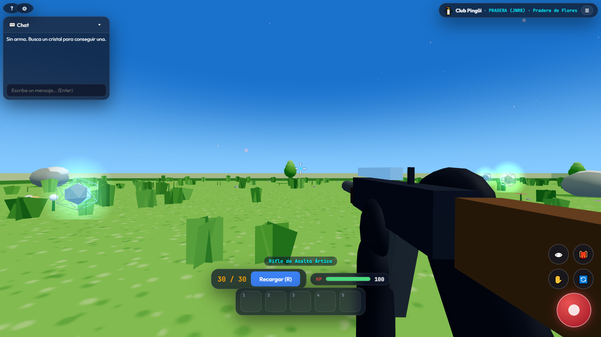
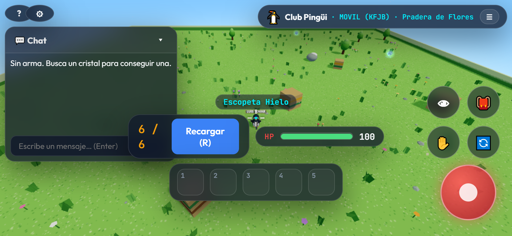
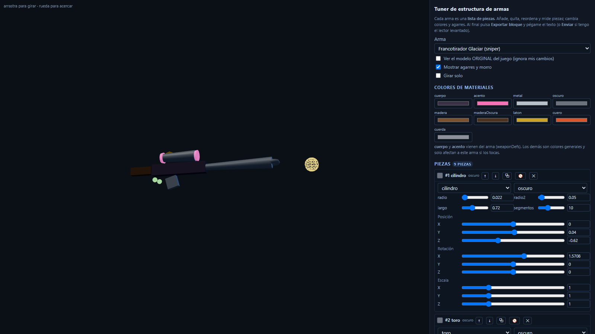
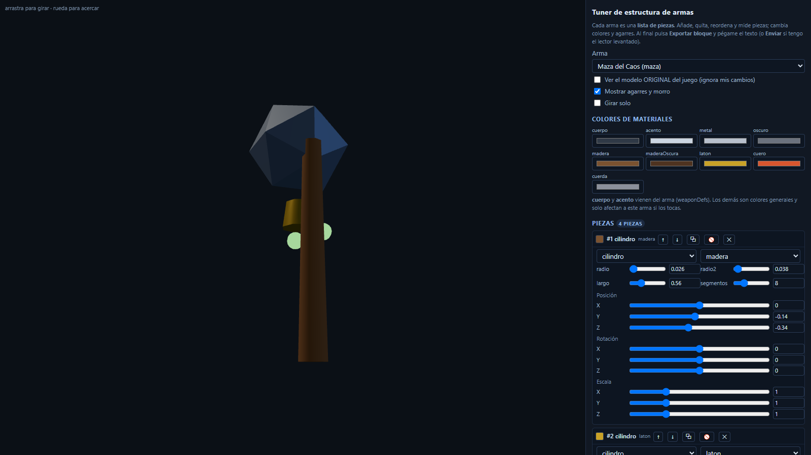

Juego multijugador 3D que corre en el navegador: avatares, salas privadas, 17 armas, 8 mapas y un servidor en tiempo real.
Seis bloques: las cuatro prácticas del parcial, los objetivos actualizados con su validación, la demostración de los módulos que ya funcionan y los instrumentos de programación (Gantt y PERT).
| 01 | Organización de fases · 4 fases, 15 actividades |
| 02 | Seguimiento y validación de objetivos · O1–O6, OKR y valor ganado |
| 03 | Estimación PERT · duración, varianza y probabilidad |
| 04 | Gestión de recursos · presupuesto, roles y KPIs |
| 05 | Demostración de módulos funcionando |
| 06 | Gantt, PERT y cierre con próximos pasos |
El proyecto no se presenta con promesas: cada objetivo tiene una prueba que lo respalda y cada cifra de avance proviene de un corte documentado. El corte de valor ganado es del 06/10/2026; el estado técnico se verificó el 27/10/2026.
Servidor node server/index.js activo · /healthz responde {"ok":true,"sessions":2} · 0 errores JS en consola.
Las actividades se agruparon por el tipo de trabajo que producen, no por el orden en que se ocurrieron. Cada fase tiene entregable y producto verificable.
Alcance, investigación tecnológica, arquitectura y diseño preliminar de interfaz, personaje y escenarios.
Modelado 3D, base de datos, servidor en tiempo real, cliente 3D e interactividad (chat, salas, juego).
Integración, pruebas funcionales, concurrencia y carga con varios clientes conectados.
Despliegue, documentación técnica, manual de usuario, avance del parcial y presentación final.
Redactados con criterios SMART y con la distinción entre meta y objetivo. El estado se reporta al corte del 06/10/2026 y se actualiza con la verificación técnica del 27/10/2026.
| Objetivo actualizado | Indicador medible | Plazo | Estado |
|---|---|---|---|
| O1. Desarrollar el núcleo multijugador: salas, emparejamiento y sincronización de jugadores en el navegador. | Suites de servidor, autenticación y lógica sin errores; una sesión conecta, entra a sala y sincroniza posiciones. | 25/10/2026 | 95 % · validado en sala Falta acta con 2+ clientes. |
| O2. Modelar y animar las 17 armas en primera persona, con estructura de piezas y postura de agarre. | 17 de 17 armas pasan la suite de estructura con 0 fallos; ningún cambio altera las medidas base. | 30/09/2026 | Cumplido · 17/17 |
| O3. Construir los 8 mapas con su ambiente, relieve, paleta de colores y objetos colocados. | Los 8 mapas construyen escena completa sin errores de JavaScript y sin diferencias contra la línea base geométrica. | 04/10/2026 | Cumplido · 8/8 |
| O4. Producir tres tuners (aletas, estructura de armas y mapas) para ajustar sin editar código a mano. | Cada tuner exporta bloques listos para pegar y envía su estado al lector local; los tres cargan sin errores. | 06/10/2026 | Cumplido · 3/3 Reserva: repetir revisión de mapatune. |
| O5. Mantener una validación automatizada de regresión que impida romper funcionalidad ya entregada. | Las suites se ejecutan en cada entrega y reportan PASS/FAIL objetivo; 0 regresiones desde la línea base. | Continuo al 15/12/2026 | Cumplido al corte |
| O6. Entregar el juego completo con su documentación antes del cierre del cuatrimestre. | Versión jugable publicada y aceptada por el docente en la revisión de cierre. | 15/12/2026 | En proceso Depende de los hitos de noviembre. |
Entregar un juego multijugador 3D jugable antes del 15/12/2026, con 17 armas, 8 mapas y documentación.
| Indicador | Valor | Lectura |
|---|---|---|
| PV · valor planeado | 128.0 h | 80 % de 160 h |
| EV · valor ganado | 145.2 h | 90.75 % real |
| AC · costo real | 140.0 h | Horas invertidas |
| SV · variación de cronograma | +17.2 h | Adelanto |
| CV · variación de costo | +5.2 h | Bajo lo presupuestado |
| SPI · índice de cronograma | 1.13 | > 1: adelantado |
| CPI · índice de costo | 1.04 | ≈ 1: conforme |
| ID | Actividad | O | M | P | TE | σ |
|---|---|---|---|---|---|---|
| A8 | Cliente 3D: mundo, avatares y cámara | 10 | 15 | 22 | 15.33 | 2.00 |
| A9 | Interactividad: chat, salas y juego | 8 | 13 | 20 | 13.33 | 2.00 |
| A7 | Servidor y comunicación en tiempo real | 8 | 12 | 18 | 12.33 | 1.67 |
| A5 | Modelado 3D de personaje y escenarios | 8 | 12 | 18 | 12.33 | 1.67 |
| A4 | Diseño preliminar (UI y escenarios) | 6 | 9 | 13 | 9.17 | 1.17 |
| A15 | Presentación final | 1 | 2 | 3 | 2.00 | 0.33 |
La estimación no es un solo número: es una distribución. Con 85.17 días de media y σ = 4.02, el compromiso de 90 días tiene 88 % de probabilidad de cumplirse, margen suficiente para absorber retrasos en A8 o A9.
Pueden retrasarse hasta su margen sin mover la fecha final. A13 es la más frágil: solo 2.17 días de holgura.
Recursos financieros, humanos y materiales identificados, asignados y monitoreados. Las cifras son estimaciones propias en pesos mexicanos para un proyecto escolar.
| Concepto | Tipo | MXN |
|---|---|---|
| Hospedaje / VPS para Node.js y Socket.IO | Variable · 4 meses | $900.00 |
| Dominio para publicar la plataforma | Fijo · 1 año | $300.00 |
| Internet (parte proporcional) | Fijo · 4 meses | $1,200.00 |
| Energía eléctrica (prorrateada) | Variable · 4 meses | $350.00 |
| Reserva de contingencia | Reserva | $275.00 |
| Subtotal | $3,025.00 |
| Rol | Responsable | Horas |
|---|---|---|
| Líder de proyecto | Luis Javier Tovar Segura | — |
| Desarrollador full-stack | Luis Javier Tovar Segura | 95 |
| Diseñador 3D y UX | Luis Javier Tovar Segura | 35 |
| Aseguramiento de calidad | Luis Javier Tovar Segura | 20 |
| Documentación y cierre | Luis Javier Tovar Segura | 10 |
| Asesor y validación | Mtro. Domingo Fraga Hernández | 2 h / quincena |
| Usuarios de prueba | Compañeros del grupo | 5 × 1 h |
No se citan como teoría: cada una dejó un artefacto verificable en el proyecto.
Distinción entre meta y objetivos con responsable único.
Específico, medible, alcanzable, relevante y con plazo.
Un objetivo ambicioso con 3–5 resultados medibles por ciclo.
Recolectar, comparar, decidir y reportar en cada revisión.
PV, EV, AC, SV, CV, SPI y CPI sobre 160 h.
Cada entrega cumple una Definición de Hecho antes de cerrarse.
Un gate no se abre si el criterio de salida no se cumple.
El alcance se acepta con evidencia, no con percepciones.
Conexión, avatar, sala y sincronización verificados en sala. Falta: prueba formal con 2+ clientes y acta de aceptación.
17/17 armas pasan la suite de estructura con 0 fallos. Piezas, agarre y morro validados por tipo.
8/8 mapas construyen escena completa sin errores de JavaScript ni diferencias contra la geometría base.
Aletas, armas y mapas cargan y exportan bloques aplicables. Reserva: repetir la verificación final de mapatune.
0 regresiones desde la línea base. Las suites se ejecutan antes de integrar cada cambio.
Depende del prototipo (06/11), la versión estable (23/11) y la aceptación del docente (15/12).
Cada gate tiene criterio de salida explícito y evidencia asociada. Esto evita declarar terminado lo que solo “se ve bien”.

La escena se construye en Three.js con relieve, vegetación instanciada, iluminación y colisiones. La cámara cambia sin recargar la partida.




Evidencia secundaria: demuestra la herramienta, no la calidad artística del juego. El escenario del tuner es oscuro a propósito para resaltar la geometría.


9/9 tipos de pieza disponibles · 17/17 armas cargan · exportación de WEAPON_PARTS con sintaxis JavaScript válida · 0 errores en consola.
Barras calculadas con la duración esperada (TE) de PERT y las precedencias reales. Escala en semanas de 5 días: 85.17 d = 17.03 semanas.
Nodos con duración esperada (TE). Las flechas rojas forman la ruta crítica; las azules son dependencias con holgura.
| Riesgo | Mitigación |
|---|---|
| A8 se retrasa | Es crítica: seguimiento semanal y margen de 4.83 d a 90 días. |
| Prueba con 2+ clientes | Agendar sesión y documentar acta antes del prototipo. |